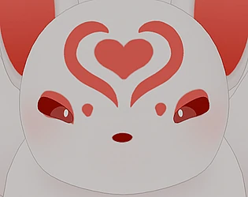
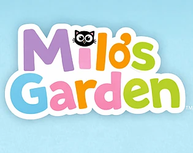
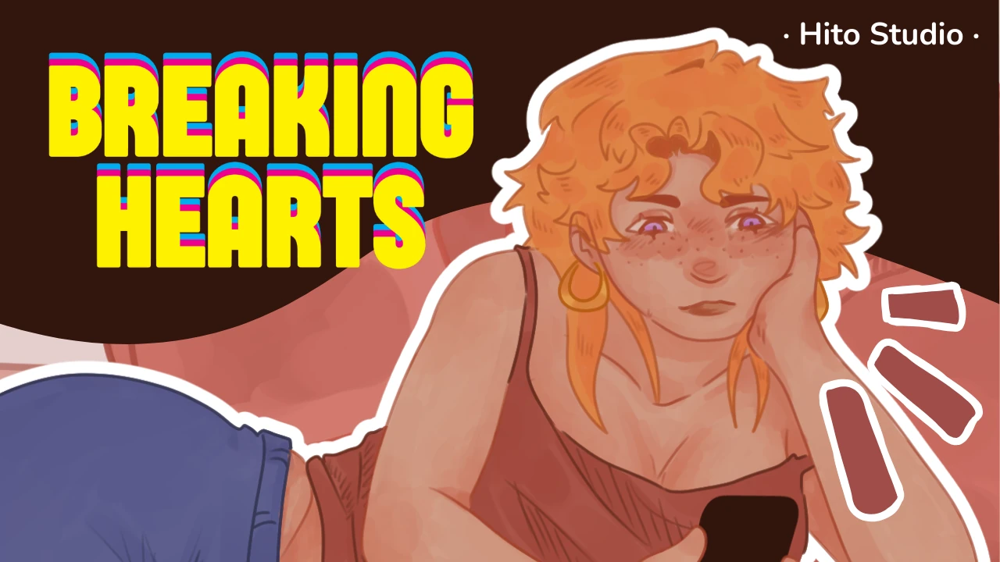
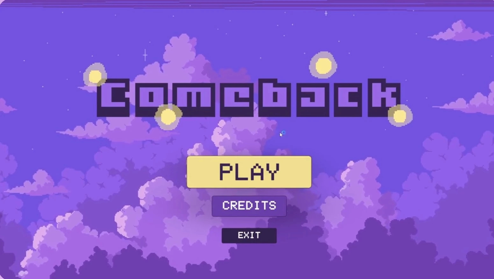
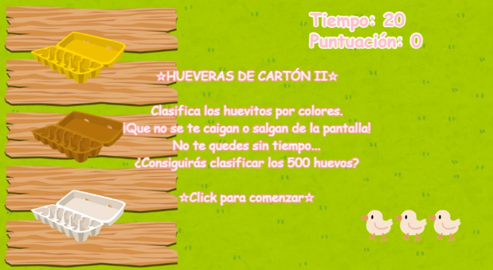
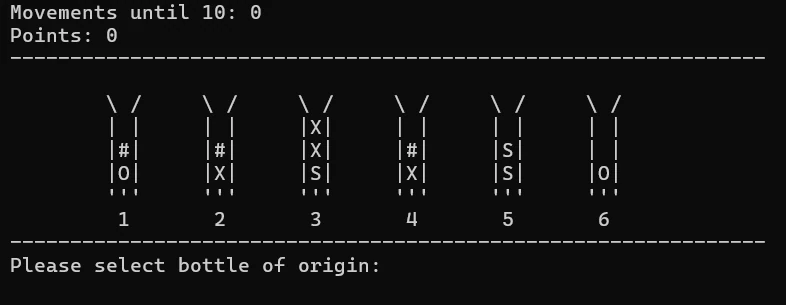

ENTI Demo Day 2026 nomineeUnity / C#
Mythical Sanctuary
Production, UI/UX design and UI implementation for a cozy exploration game.
Games & development
Team productions, game jam entries and small experiments. Each project shows my contribution and links to a playable build or the source.

Production, UI/UX design and UI implementation for a cozy exploration game.

Best Adaptation for a Children’s Audience. My work covered UI/UX, interface implementation and gameplay programming.
An atmospheric platformer. I contributed to gameplay programming, level design and narrative.

A rhythm game with boss battles and interactive dialogue. Contributions: narrative, programming support, music and level design.

A small Unity project made in a few hours to experiment with movement, game feel and rapid prototyping.

A frontend learning project focused on browser-game logic using JavaScript, HTML and CSS.

A cooperative C++ project focused on clean code, object-oriented programming and teamwork.
Programming assignments, Unreal Engine prototypes, web exercises and collaborative projects.
I’m based in Gavà, Barcelona. Let’s get in touch.